rmgpy.statmech — Molecular Degrees of Freedom¶
This module contains classes and methods for working with statistical mechanics models for various molecular degrees of freedom. All such models derive from the Mode base class, and include:
- Translation - 3D translational motion in an ideal gas
- RigidRotor - 2D (linear) or 3D (nonlinear) external rotational motion, modeled as a rigid rotor
- HarmonicOscillator - A set of independent 1D vibrational motions, modeled as harmonic oscillators
- HinderedRotor - 1D internal (hindered) torsional rotation using a simple cosine or Fourier series potential
A list of molecular degrees of freedom can be stored in a StatesModel object.
Working With Molecular Degrees of Freedom¶
Each atom in a molecular configuration has three spatial dimensions in which it
can move. Thus, a molecular configuration consisting of  atoms has
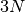 degrees of freedom. We can distinguish between those modes that
involve movement of atoms relative to the molecular center of mass (called
internal modes) and those that do not (called external modes). Of the
external degrees of freedom, three involve translation of the entire molecular
configuration, while either three (for a nonlinear molecule) or two (for a
linear molecule) involve rotation of the entire molecular configuration
around the center of mass. The remaining 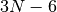 (nonlinear) or
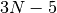 (linear) degrees of freedom are the internal modes, and can be
divided into those that involve vibrational motions (symmetric and asymmetric
stretches, bends, etc.) and those that involve torsional rotation around single
bonds between nonterminal heavy atoms.
atoms has
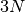 degrees of freedom. We can distinguish between those modes that
involve movement of atoms relative to the molecular center of mass (called
internal modes) and those that do not (called external modes). Of the
external degrees of freedom, three involve translation of the entire molecular
configuration, while either three (for a nonlinear molecule) or two (for a
linear molecule) involve rotation of the entire molecular configuration
around the center of mass. The remaining 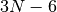 (nonlinear) or
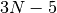 (linear) degrees of freedom are the internal modes, and can be
divided into those that involve vibrational motions (symmetric and asymmetric
stretches, bends, etc.) and those that involve torsional rotation around single
bonds between nonterminal heavy atoms.
The mathematical description of these degrees of freedom falls under the purview of quantum chemistry, and involves the solution of the time-independent Schrodinger equation:
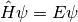
where 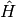 is the Hamiltonian, is the wavefunction,
and  is the energy. The exact form of the Hamiltonian varies depending
on the degree of freedom you are modeling. Since this is a quantum system, the
energy can only take on discrete values. Once the allowed energy levels are
known, the partition function 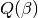 can be computed using the
summation
is the energy. The exact form of the Hamiltonian varies depending
on the degree of freedom you are modeling. Since this is a quantum system, the
energy can only take on discrete values. Once the allowed energy levels are
known, the partition function 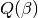 can be computed using the
summation
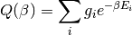
where 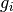 is the degeneracy of energy level  (i.e. the number
of energy states at that energy level) and
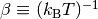.
(i.e. the number
of energy states at that energy level) and
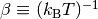.
The partition function is an immensely useful quantity, as all sorts of thermodynamic parameters can be evaluated using the partition function:
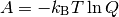
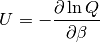
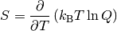
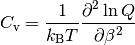
Above,  ,
,  ,
,  , and
, and  are the
Helmholtz free energy, internal energy, entropy, and constant-volume heat
capacity, respectively.
are the
Helmholtz free energy, internal energy, entropy, and constant-volume heat
capacity, respectively.
The partition function for a molecular configuration is the product of the partition functions for each invidual degree of freedom:

This means that the contributions to each thermodynamic quantity from each molecular degree of freedom are additive.
Representing Molecular Degrees of Freedom¶
- class rmgpy.statmech.StatesModel¶
A set of molecular degrees of freedom data for a given molecule. The attributes are:
Attribute Type Description modes list A list of the degrees of freedom spinMultiplicity int The spin multiplicity of the molecule - getDensityOfStates()¶
Return the value of the density of states in mol/J at the specified energies Elist in J/mol above the ground state. An active K-rotor is automatically included if there are no translational or external rotational modes.
- getDensityOfStatesILT()¶
Return the value of the density of states in mol/J at the specified energies Elist in J/mol above the ground state, calculated by numerical inverse Laplace transform of the partition function using the method of steepest descents. This method is generally slower than direct density of states calculation, but is guaranteed to correspond with the partition function. The optional order attribute controls the order of the steepest descents approximation applied (1 = first, 2 = second); the first-order approximation is slightly less accurate, smoother, and faster to calculate than the second-order approximation. This method is adapted from the discussion in Forst [Forst2003].
[Forst2003] W. Forst. Unimolecular Reactions: A Concise Introduction. Cambridge University Press (2003). isbn:978-0-52-152922-8
- getEnthalpy()¶
Return the enthalpy in J/mol at the specified temperature T in K.
- getEntropy()¶
Return the entropy in J/mol*K at the specified temperature T in K.
- getHeatCapacity()¶
Return the constant-pressure heat capacity in J/mol*K at the specified temperature T in K.
- getPartitionFunction()¶
Return the the partition function at the specified temperatures T in K. An active K-rotor is automatically included if there are no translational or external rotational modes.
- getSumOfStates()¶
Return the value of the sum of states at the specified energies Elist in J/mol above the ground state. The sum of states is computed via numerical integration of the density of states.
- class rmgpy.statmech.Mode¶
The base class for all molecular degrees of freedom.
- getEnthalpies()¶
Return the enthalpy in J/mol at the specified temperatures Tlist in K, as a numpy array.
- getEntropies()¶
Return the entropy in J/mol*K at the specified temperatures Tlist in K, as a numpy array.
- getHeatCapacities()¶
Return the constant-pressure heat capacity (Cp) in J/mol*K at the specified temperatures Tlist in K, as a numpy array.
- getPartitionFunctions()¶
Return the partition functions at the specified temperatures Tlist in K, as a numpy array.
External Degrees of Freedom¶
Translation¶
- class rmgpy.statmech.Translation¶
A representation of translational motion in three dimensions for an ideal gas. The attributes are:
Attribute Type Description mass Quantity The molar mass of the molecule The quantities that depend on volume/pressure – partition function and entropy – are evaluated at a standard pressure of 1 atm.
- getDensityOfStates()¶
Return the density of states at the specified energies Elist in J/mol above the ground state. The formula is
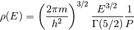
where
is energy,  is mass,
is mass,  is
the Boltzmann constant, and
is
the Boltzmann constant, and  is the gas law constant.
is the gas law constant.
- getEnthalpy()¶
Return the contribution to the enthalpy due to translation in J/mol at the specified temperature T in K. The formula is
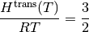
where
 is temperature and is the gas law constant.
is temperature and is the gas law constant.
- getEntropy()¶
Return the contribution to the entropy due to translation in J/mol*K at the specified temperature T in K. The formula is
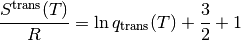
where
is temperature,  is the
partition function, and is the gas law constant.
is the
partition function, and is the gas law constant.
- getHeatCapacity()¶
Return the contribution to the heat capacity due to translation in J/mol*K at the specified temperature T in K. The formula is
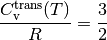
where
is temperature and is the gas law constant.
- getPartitionFunction()¶
Return the value of the partition function at the specified temperature T in K. The formula is
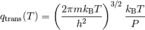
where
is temperature,  is volume, is mass,
is volume, is mass,
 is dimensionality, is the Boltzmann
constant, and
is dimensionality, is the Boltzmann
constant, and  is the Planck constant.
is the Planck constant.
- getSumOfStates()¶
Return the sum of states at the specified energies Elist in J/mol above the ground state. The formula is
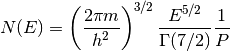
where
is energy, is mass, is
the Boltzmann constant, and is the gas law constant.
Rotation¶
- class rmgpy.statmech.RigidRotor¶
A rigid rotor approximation of (external) rotational modes. The attributes are:
Attribute Type Description linear boolean True if the associated molecule is linear, False if nonlinear inertia Quantity The moment(s) of inertia of the molecule (1 if linear, 3 if nonlinear) symmetry int The total external rotational symmetry number - getDensityOfStates()¶
Return the density of states at the specified energies Elist in J/mol above the ground state in mol/J. The formula is
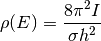
for linear rotors and
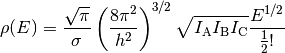
for nonlinear rotors. Above,
is energy,  is the symmetry number, 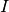 is the moment of inertia,
is the Boltzmann constant, and is the
Planck constant.
is the symmetry number, 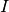 is the moment of inertia,
is the Boltzmann constant, and is the
Planck constant.
- getEnthalpy()¶
Return the contribution to the enthalpy due to rigid rotation in J/mol at the specified temperature T in K. The formula is
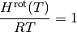
for linear rotors and
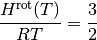
for nonlinear rotors, where
is temperature and is
the gas law constant.
- getEntropy()¶
Return the contribution to the entropy due to rigid rotation in J/mol*K at the specified temperature T in K. The formula is
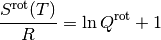
for linear rotors and
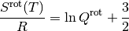
for nonlinear rotors, where 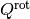 is the partition function for a rigid rotor and
is the gas law constant.
- getHeatCapacity()¶
Return the contribution to the heat capacity due to rigid rotation in J/mol*K at the specified temperature T in K. The formula is
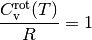
if linear and
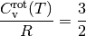
if nonlinear, where
is temperature and is the gas
law constant.
- getPartitionFunction()¶
Return the value of the partition function at the specified temperature T in K. The formula is

for linear rotors and
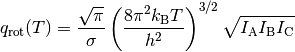
for nonlinear rotors. Above,
is temperature,
is the symmetry number, is the moment of inertia,
is the Boltzmann constant, and is the
Planck constant.
- getSumOfStates()¶
Return the sum of states at the specified energies Elist in J/mol above the ground state. The formula is
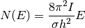
for linear rotors and
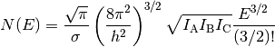
for nonlinear rotors. Above,
is energy,
is the symmetry number, is the moment of inertia,
is the Boltzmann constant, and is the
Planck constant.
Internal Degrees of Freedom¶
Vibration¶
- class rmgpy.statmech.HarmonicOscillator¶
A representation of a set of vibrational modes as one-dimensional quantum harmonic oscillator. The attributes are:
Attribute Type Description frequencies Quantity The set of vibrational frequencies - getDensityOfStates()¶
Return the density of states at the specified energies Elist in J/mol above the ground state. The Beyer-Swinehart method is used to efficiently convolve the vibrational density of states into the density of states of other modes. To be accurate, this requires a small (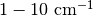 or so) energy spacing.
- getEnthalpy()¶
Return the contribution to the enthalpy due to vibration in J/mol at the specified temperature T in K. The formula is
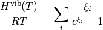
where 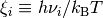,
is temperature,  is the frequency of vibration
, is the Boltzmann constant,
is the Planck constant, and is the gas law constant.
is the frequency of vibration
, is the Boltzmann constant,
is the Planck constant, and is the gas law constant.
- getEntropy()¶
Return the contribution to the entropy due to vibration in J/mol*K at the specified temperature T in K. The formula is
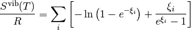
where ,
is temperature, is the frequency of vibration
, is the Boltzmann constant,
is the Planck constant, and is the gas law constant.
- getHeatCapacity()¶
Return the contribution to the heat capacity due to vibration in J/mol*K at the specified temperature T in K. The formula is
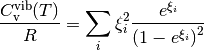
where ,
is temperature, is the frequency of vibration
, is the Boltzmann constant,
is the Planck constant, and is the gas law constant.
- getPartitionFunction()¶
Return the value of the partition function at the specified temperature T in K. The formula is
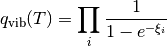
where ,
is temperature, is the frequency of vibration
, is the Boltzmann constant,
is the Planck constant, and is the gas law constant. Note
that we have chosen our zero of energy to be at the zero-point energy
of the molecule, not the bottom of the potential well.
- getSumOfStates()¶
Return the sum of states at the specified energies Elist in J/mol above the ground state. The Beyer-Swinehart method is used to efficiently convolve the vibrational sum of states into the sum of states of other modes. To be accurate, this requires a small ( or so) energy spacing.
Torsion¶
- class rmgpy.statmech.HinderedRotor¶
A one-dimensional hindered rotor using one of two potential functions: the the cosine potential function
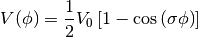
where 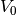 is the height of the potential barrier and
is the number of minima or maxima in one revolution of
angle  , equivalent to the symmetry number of that rotor;
or a Fourier series
, equivalent to the symmetry number of that rotor;
or a Fourier series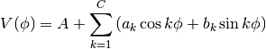
The attributes are:
Attribute Type Description inertia Quantity The reduced moment of inertia of the hindered rotor symmetry int The symmetry number for the hindered rotation barrier Quantity The barrier height of the cosine potential fourier Quantity The 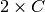 array of Fourier coefficients for the Fourier potential If both sets of parameters are available, the Fourier series will be used, as it is more accurate. However, it is also significantly more computationally demanding.
- getDensityOfStates()¶
Return the density of states at the specified energies Elist in J/mol above the ground state. For the cosine potential, the formula is
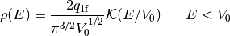
and
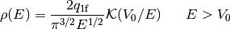
where
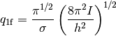
is energy, is barrier height, and
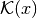 is the complete elliptic integral of the first
kind. There is currently no functionality for using the Fourier series
potential.
- getEnthalpy()¶
Return the contribution to the heat capacity due to hindered rotation in J/mol at the specified temperature T in K. For the cosine potential, this is calculated numerically from the partition function. For the Fourier series potential, we solve the corresponding 1D Schrodinger equation to obtain the energy levels of the rotor and utilize the expression
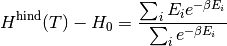
to obtain the enthalpy.
- getEntropy()¶
Return the contribution to the heat capacity due to hindered rotation in J/mol*K at the specified temperature T in K. For the cosine potential, this is calculated numerically from the partition function. For the Fourier series potential, we solve the corresponding 1D Schrodinger equation to obtain the energy levels of the rotor and utilize the expression
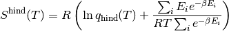
to obtain the entropy.
- getFrequency()¶
Return the frequency of vibration in cm^-1 corresponding to the limit of harmonic oscillation. The formula is
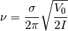
where
is the symmetry number, the barrier
height, and the reduced moment of inertia of the rotor. The
units of the returned frequency are cm^-1.
- getHeatCapacity()¶
Return the contribution to the heat capacity due to hindered rotation in J/mol*K at the specified temperature T in K.
For the cosine potential, the formula is
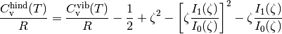
where ,
is temperature, is the barrier height,
is the Boltzmann constant, and is the
gas law constant.For the Fourier series potential, we solve the corresponding 1D Schrodinger equation to obtain the energy levels of the rotor and utilize the expression

to obtain the heat capacity.
- getPartitionFunction()¶
Return the value of the partition function at the specified temperature T in K. For the cosine potential, the formula makes use of the Pitzer-Gwynn approximation:
Substituting in for the right-hand side partition functions gives
where
is temperature, is the barrier height,
is the moment of inertia, is the symmetry
number, is the Boltzmann constant, and
is the Planck constant. is the modified Bessel function
of order zero for argument  .
.For the Fourier series potential, we solve the corresponding 1D Schrodinger equation to obtain the energy levels of the rotor and utilize the expression
to obtain the partition function.
- getPotential()¶
Return the values of the hindered rotor potential in J/mol at the angles phi in radians.
- getSumOfStates()¶
Return the sum of states at the specified energies Elist in J/mol above the ground state. For the cosine potential, the formula is
and
where
is energy, is barrier height, and
and are the complete
elliptic integrals of the first and second kind, respectively. There is
currently no functionality for using the Fourier series potential.
Table Of Contents
Previous topic
rmgpy.species — Chemical Species
Next topic
rmgpy.thermo — Thermodynamics Models